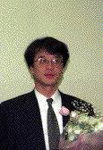

1995年3月31日 ICOT 解散パーティーにて
S. Tojo, H. Tsuda, K. Yokota, H. Yasukawa and Y. Morita, "Quixote as a tool for Natural Language Processing", Proc. of International Conference on Tools with Artificial Intelligence (ICTAI '93), 1993. 言語情報処理の枠組としてのQuixote. 人工知能学会誌 vol.9, no.6, pp.863-874 (1994). 状況理論による法的推論の形式化. 情報処理学会論文誌 vol.36,no.1, pp.51-60 (1995).
Tojo, S., "Temporal Situation and Concurrency", The Seoul International Conference on Natural Language Processings (SICONLP'90), Language Research Institute of Seoul National University, 12.4.1-12.4.6, 1990. Tojo, S., "Categorial Analysis of Sentence Generation", The Logic Programming Conference (LPC '91), Institute of New Generation Computer (ICOT), 1991. Tojo,S. and Yasukawa, H., "Situated Inference of Temporal Information", Fifth Generation Computer System '92 (FGCS '92), Institute for New Generation Computer Technology (ICOT), 1992 S. Tojo, "Systematic Case Rearrangement by Free-Ordered Typed Lambda Calculus", The 2nd Pacific Rim International Conference on Artificial Intelligence (PRICAI'92), 1992. S.Tojo and K.Nitta, "Automatic Generation of Temproral Relations in a Legal Case", Proc. of Workshop on Legal Application of Logic Programming, ICLP '94, 1994. S.Tojo and S.Wong, "A Legal Reasoning System based on Situation Theory", 4th Conference on Situation Theory and Its Applications, 1994.
Tojo, S., "A Type-theorerical Analysis of Complex Verb Translation", 13th International Conference on Computational Linguistics (COLING '90), 1990. Saito, Y. and Tojo, S. and Komiya, S., "Conceptural Clustering Based on Affinity", Proceedings of the 10th European Conference of Artificial Intelligence (ECAI'92) The European Coordinating Committee for Artificial Intelligence (ECCAI), 1992. 部分的関係からのクラスタリング: 直観的データ解析の枠組. 共著 平成5年11月 情報処理学会論文誌 vol.34, no.11, pp.2354-2365. S. Tojo, "Free-ordered Categorial Unification Grammar on Chemical Abstract Machine", 15th International Conference on Computational Linguistics (COLING '94), 1994